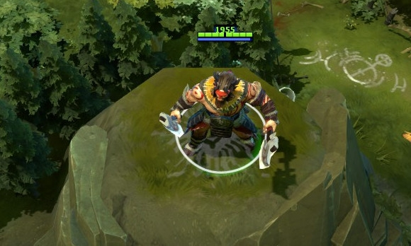
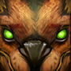
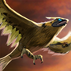

 兽王
兽王
背景故事
卡洛克自出生伊始就被当做兽婴。他的母亲在他出生时就已死去；他的父亲是斯洛姆末代帝王的马蹄铁匠，在他五岁时被马群践踏致死。后来，卡洛克将自己卖到国王的动物园干活，在那里，他和宫廷里面饲养的狮子，猩猩，野鹿以及其他一些很少见的甚至传说中的野兽一起长大。在他七岁那年，一个冒险者带着一只没人见过的野兽来觐见国王。当这只野兽被国王的链条锁住的时候，它说话了，乞求自由，然而它的嘴并没有张开。国王大笑，命令野兽表演助兴，遭到拒绝以后，国王用他的疯狂权杖狠狠的抽打了野兽，并把它关在了兽栏里面。接下来的几个月里，卡洛克每天都给这个受伤的野兽偷偷的带去食物和药物，然而这一切只能减缓野兽的死亡。这只野兽和卡洛克开始了交流，无言的交流，他们之间的情感纽带也随着时间的推移而加深，最后卡洛克发现他竟然能够和宫廷动物园里面的所有动物交流。在那只野兽死去的晚上，卡洛克狂怒无比，他煽动了所有的动物一起反叛，并且将它们的笼子打开，在宫廷广场上大开杀戒。末代帝王在动乱中受伤。在混乱之中，一只皇家雄鹿在这个救了它的男孩面前屈膝，让他以兽王的身份骑上它，带他跃过了堡垒的高墙，逃出生天。现在，兽王卡洛克已经成长为一个男子汉，并且仍然能够自由的和野生动物交谈。他已经成为了拥有自然狂猛野性的战士。
| 野性之斧 兽王投出他的斧头然后召回它们，切开飞过的敌人和树木。每把飞斧只对同一个敌人攻击一次。 伤害效果无视技能免疫。 魔法消耗：120
冷却时间：13
|
  野性呼唤：豪猪/战鹰
魔法消耗：25
冷却时间：42/38/34/3
兽王召唤号称千里眼的战鹰侦察战场。3级以上的战鹰静止4秒后将进入隐身状态。 魔法消耗：25
冷却时间：42/38/34/3
|
野性之心 唤起友军内心的狂怒，提高他们的攻击速度。 魔法消耗：0
冷却时间：0
|
原始咆哮 兽王发出震耳欲聋的咆哮，使目标敌方单位受到伤害并眩晕，同时在兽王和他的猎物之间清出一条通道。通道上的所有单位都被震开，也受到伤害并被降低移动和攻击速度。可用神杖升级。 眩晕效果无视技能免疫。技能免疫状态下不会受到伤害。 魔法消耗：150/175/20
冷却时间：80.0/75.0/
|